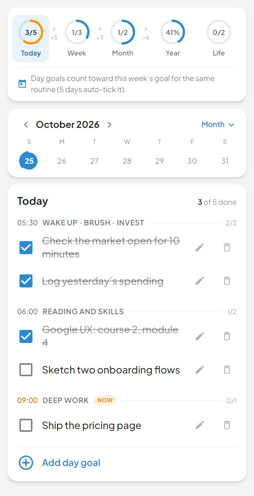
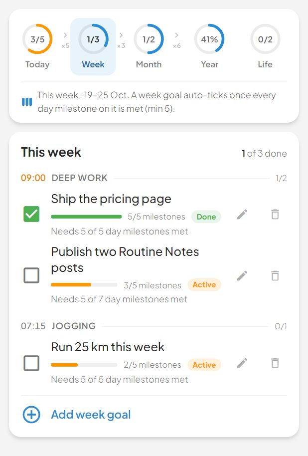
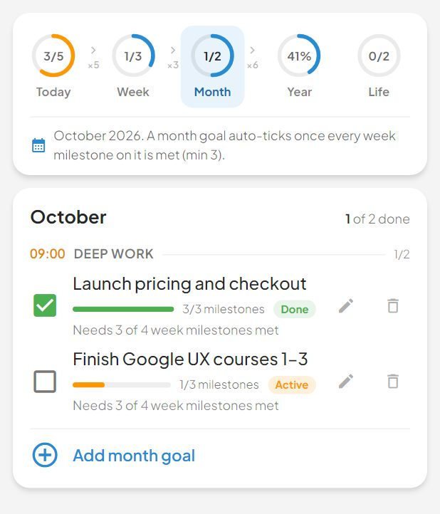
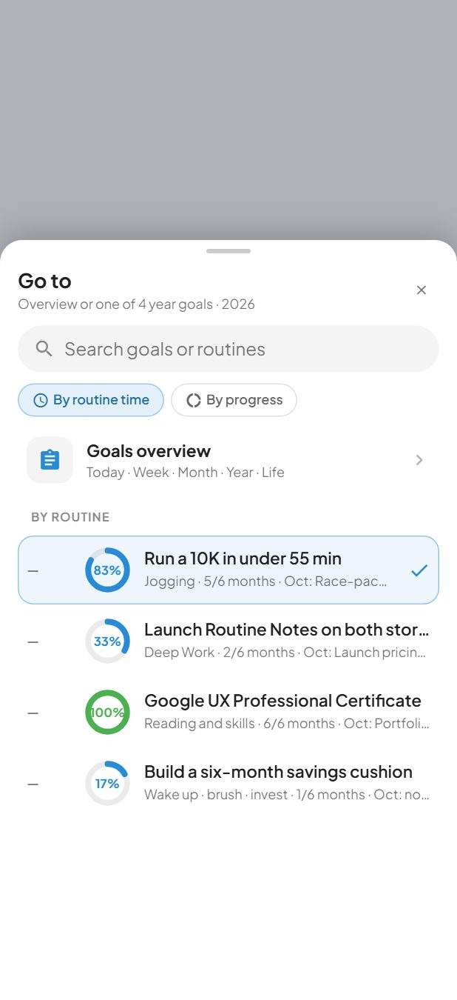
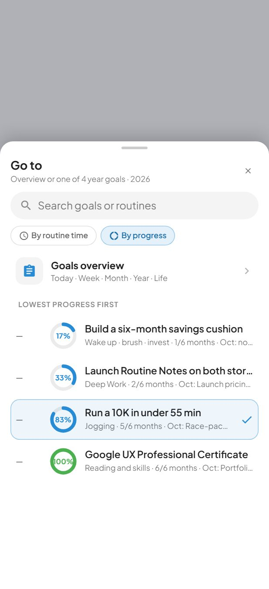
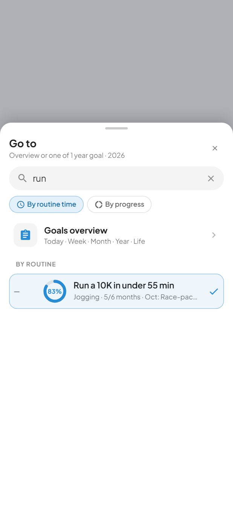

The goal cascade by routine, milestones and the goal item sheet. 2 in use. Rendered from Storybook on the app background (#f4f4f4). Generated by tools/build-canvases.js; do not edit by hand.
The Goals screen body (packages/design/Goals.dc.html).



Getting to another year goal. One list, three hosts:


